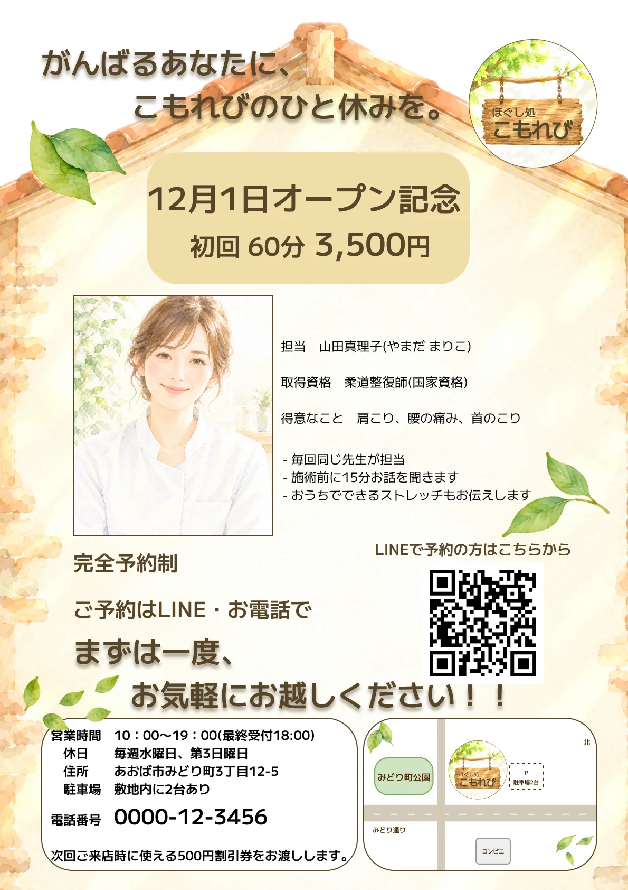
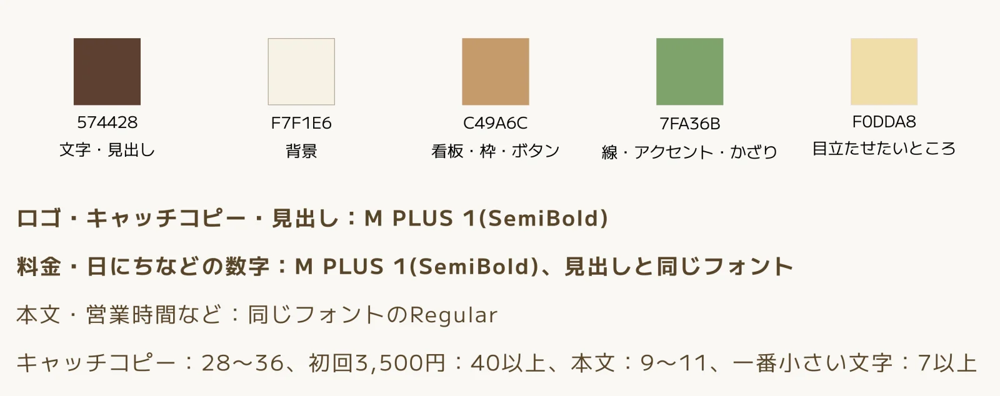
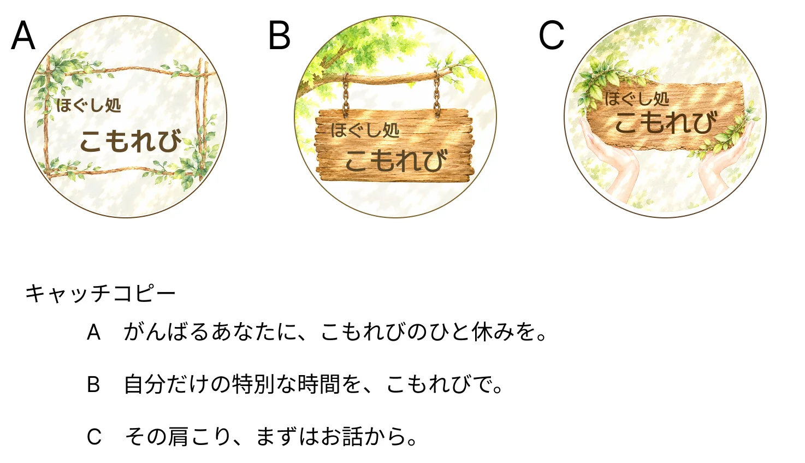

ほぐし処 こもれび（架空の整体院のチラシ・ロゴ）
#チラシ #ロゴ
※ 架空のお店です。お客様とのやりとりは、AIにお客様役をしてもらう練習として行いました。写真・イラストは画像生成AIで作ったイメージです。
- 対応内容
- ヒアリング・キャッチコピー・ロゴ・チラシデザイン・地図・入稿データ作成
- 制作期間
- 2026年10月24日〜10月30日（作業時間 約8.7時間）
- 使用ツール
- Figma／ChatGPT（画像生成）
- サイズ
- A4・縦・片面（印刷用の入稿データまで作成）

制作要件
ポートフォリオ用に制作した、架空の整体院「ほぐし処 こもれび」のオープン告知チラシとロゴです。お客様役とのヒアリングから、見積もり・請求・修正・印刷用データの納品まで、実際の仕事と同じ流れで制作しました。ゴールは、オープン記念価格（初回60分 3,500円）を知ってもらい、LINEや電話で予約してもらうことです。
- ターゲット：40〜60代の女性（お店から車で10分ほどの近所に住む方）
- 見るとき：ポストに入ったチラシや、近所のカフェに置かれたチラシを手に取ったとき
- 大事にしていること：家事や仕事で自分をあと回しにしがちで、ほっとできる場所がほしい
- ご要望：やさしく落ち着いた雰囲気／赤・黄色のはでな色は使わない／女性ひとりでも入りやすい印象
情報設計
のせる情報が多かったため、見てほしい順番を決めてから並べました。
- キャッチコピーとロゴ：最初に「ほっとできるお店」だと伝える
- オープン日と初回料金：いちばん伝えたいことを大きく見せる
- 先生の顔と強み：「毎回同じ先生」「施術前に15分お話を聞く」「おうちでできるストレッチ」で、駅前のチェーン店とのちがいを伝える
- 予約方法：LINEで予約してほしいというご要望から、QRコードを大きく置く
- 営業時間・地図：最後に、行くために必要な情報をまとめる
デザインコンセプト
店名の「こもれび」から、「木もれ日がさしこむ、ほっとできる小さなお家」をテーマにしました。お家の形のわくの中に情報をまとめ、上から葉っぱと光がさしこむようにしています。
色は、こげ茶・きなり・木の色・葉っぱの緑・やわらかい光の5色です。フォントは M PLUS 1 にしぼり、見出しと数字は SemiBold、本文は Regular で使い分けました。

ロゴデザイン
「葉っぱ・やわらかい光・丸っこい形」というご要望から、3案（木の枝のわく／木に下げた看板／手でささえる看板）をご提案しました。
お客様が選んだのは「木に下げた看板」。「いらっしゃい」と迎えてくれるお店の入り口をイメージしています。LINEのアイコン用に、小さくしても読めるシンプル版も作りました。

修正とやりとり
- ロゴ：「遠くからでも読みやすく」というご要望から、看板の文字を大きくしました。文字が看板のはしにくっつかないよう、看板も一緒に大きくして、文字の太さはそのまま残しました
- 地図：お客様の手書きの地図をもとに作り直し、お店の場所に看板ロゴのミニ版を置いて、ひと目で場所がわかるようにしました
デザインの工夫
- はでな色を使わずに目立たせるため、料金の下地に「やわらかい光」の色を使いました
- キャッチコピーに小さくくっきりした影をつけて、背景の絵の上でも読みやすくしました
- 地図にもロゴを入れて、チラシ全体の雰囲気をそろえました
- 印刷用に塗り足しと文字の安全な範囲を決めて、文字が切れないようにしました
- 文字と背景のコントラスト比を確認しました（文字×背景 8.26 など）
振り返り・今後の改善
作業時間をタイムトラッカーで記録しました（ヒアリング2時間／キャッチコピー0.2時間／ロゴ3.4時間／地図0.4時間／チラシデザイン2時間／入稿データ0.7時間）。
- ヒアリングの時間も、料金にふくめて考える必要があると気づきました
- ロゴは、小さいサイズでの見え方を最初から考えて作ります
- 印刷用の画像は、最初から大きいサイズで用意します
- Figma では印刷用の色（CMYK）で書き出せないため、印刷で色が少し変わることをお客様に伝えます